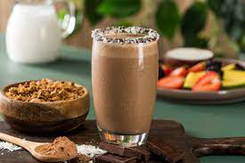
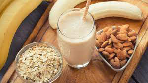
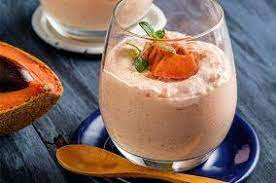
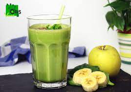

Licuado de coco con chocolate
Ingredientes
- Suficiente de chocolate amargo, fundido, para escarchar vaso
- Suficiente de coco rallado, para escarchar vaso
- 1/4 tazas de chocolate en polvo
- 2 tazas de Ades® coco
- 1/4 tazas de granola
- 2 cucharaditas de chía
Elaboración paso a paso
- Escarcha tu vaso con el chocolate y el coco rallado, refrigera para que solidifique el chocolate y reserva.
- Licúa el chocolate en polvo con el ades® Coco, la granola y la chía hasta que se integre por completo. Sirve tú licuado en el vaso escarchado.

Licuado de plátano con leche de avena
Ingredientes
- 1 taza de avena Quaker® Old Fashioned
- 5 tazas de agua
- 1/2 cucharaditas de esencia de vainilla, sin color
- 2 cucharadas de azúcar morena
- 1/2 cucharaditas de sal
- 1/2 tazas de plátano, picado
- 1/2 cucharaditas de canela
- 2 cucharadas de nuez
Elaboración paso a paso
- Para la leche de avena Quaker®, coloca la avena Quaker® en un bowl y vierte el agua, reposa por 30 minutos, cuela y reserva.
- Licúa la avena Quaker®, la esencia de vainilla, la azúcar morena y la sal con el agua.
- Cuela con ayuda de un colador o una manta de cielo 2 veces o hasta que ya no se vean restos de avena
- Para el licuado de plátano, licúa la leche de avena Quaker® el plátano, la canela y la nuez.

Licuado de avena con amaranto y mamey
Ingredientes
- 2 tazas de leche de avena
- 4 cucharadas de amaranto
- 1 taza de mamey
- 1 cucharadita de canela en polvo
- 2 dátiles sin hueso para endulzar
Elaboración paso a paso
- COLOCA en la licuadora la leche de avena, el amaranto, el mamey, la canela y los dátiles
- LICÚA hasta que todo quede bien incorporado y sirve.

Licuado de espinacas y plátano
Ingredientes
- 1 taza de leche
- 1 taza de espinacas
- 1 plátano
- 1 cucharada de avena
- 1 cucharada de semillas de chía
Elaboración paso a paso
- LICUA la leche, las espinacas, el plátano, la avena y las semillas de chía.
- DISFRUTA este licuado de espinacas, ¡delicioso y saludable!
Licuado de plátano, fresas y chía
Ingredientes
- ½ taza de fresas
- ½ plátano
- 1 cucharada de semillas de chía
- 1 taza de leche
- Miel o azúcar al gusto
Elaboración paso a paso
- DESINFECTA las fresas.
- LICUA las fresas, el plátano, las semillas de chía y la leche.
- AGREGA miel o azúcar al gusto al licuado.
- DISFRUTA este delicioso licuado de plátano, fresas y chía, ¡empieza tu día llena de energía.